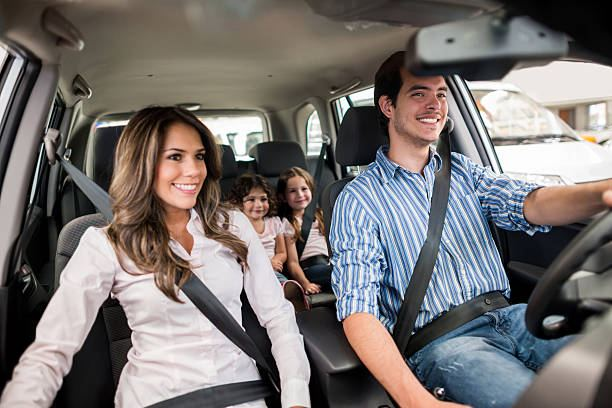
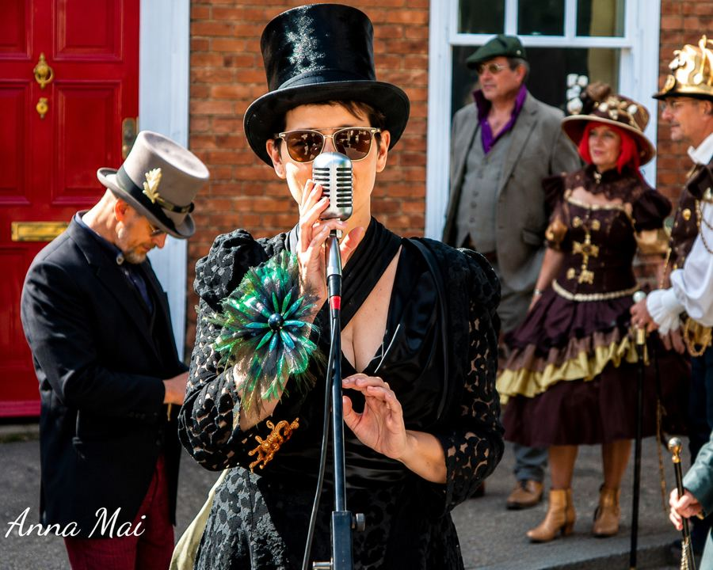
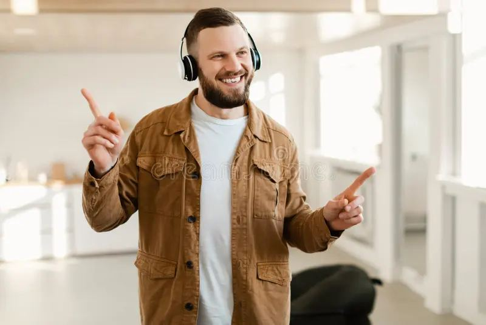
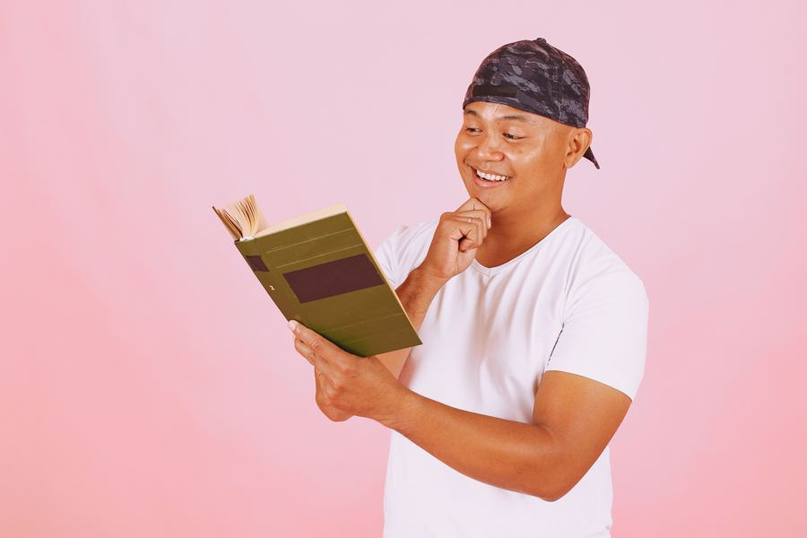

Aptis Speaking
Part 1: In this part, I am going to ask you three short questions about yourself and your interests. You will have 30 seconds to reply to each question.
1. What is a typical meal in your country?
=> in my country, we have three meals in a day. For breakfast, we often eat a bread and noodle. For lunch and dinner, we often have rice, fish, meat and vegetables. We eat at home more often because it is healthy and affordable. My mother usually cooks the meals, and I enjoy eating together with my family every day. Sometimes we also eat out on special occasions.
2. How did you come here?
=> I came here by car. I left home early because I live far from here, at 5 am and came here at 7 am. The traffic in Hanoi was heavy. I felt a bit tired because the trip took longer than usual. Next time, I will try to leave home even earlier to avoid the traffic.
3. What is the weather like today?
=> Today the weather is very nice. It is sunny and perfect for outdoor activities. When the weather is nice, I like to go out with friends and walk in the park. The fresh air makes me feel relaxed and happy. I think this kind of weather is perfect for taking photos too.
Part 2: In this part, I'm going to ask you to describe a picture. Then I will ask you two questions about it. You will have 45 seconds for each response.
 |
1. Describe the picture => In this picture, I can see four people, a man, a woman and two children. I think they are a family. They are in a car. The man is driving the car and a woman is sitting next to him. The two children are in the back seats. They look happy. Maybe they are going on holiday. I like this picture because it shows happiness of a family. |
2. When was the last time you traveled by car?
=> Last weekend, I travelled by car with my family. We went to Halong Bay. During the trip, we talked and listen to music. It was fun. It helped me relax after a busy day and share happy moments with my family. We also stopped at a small restaurant to try some local seafood. It was a memorable trip for the whole family.
3. What do you do to kill time traveling long distances?
=> I usually listen to music because it is interesting. It helps me reduce stress, Sometimes I sleep. It is good for my health because it helps me stay healthy. I usually choose slow songs because they help me feel calm. Sometimes I also chat with the person sitting next to me.
Part 3: In this part, I'm going to ask you to compare two pictures, and I will then ask you two questions about them. You will have 45 seconds for each response.
1. Tell me what you can see in these two pictures.


=> The two pictures show people enjoying music in different ways.
In the first picture, I can see some people. I think they are a music band. They are playing music on the street. One man is singing. They are wearing beautiful clothes.
In the second picture, I can see a man. He is at home. He is wearing a headphone and listening to music. He looks happy.
The people in both pictures love music. I think both ways of enjoying music can bring people joy. Personally, I would love to try both experiences someday.
2. What are the differences between listening to live music and listening to recorded music?
=> Both live music and recorded music have different attractions, depending on people’s interests. Some people like live music because it is more exciting because people can watch the singers. Recorded music is more convenient because people can listen to it anytime. For example, at a live concert, the atmosphere is very energetic. But recorded music lets me relax and listen at home anytime I want.
3. Do you think music plays an important role in people's lives? Why?
=> Music plays is important because it can help people reduce stress and share happy moments with family and friends. Besides it helps connect people all over the world. For example, I often listen to music while doing housework because it makes the work less boring. Music also brings people from different countries closer together.
Part 4: In this part, I'm going to show you a picture and ask you three questions. You will have 1 minute to think about your answers before you start speaking. You will have 2 minutes to answer all three questions.

Tell me about a time when you read an interesting book.
Why do some people prefer reading books to watching movies?
Do you think e-books will completely replace printed books in the future? Why or why not?
=> Regarding the first question, today I'm going to talk about a time when I read an interesting book. Last year, I read a book about successful people. It taught me many useful lessons and inspired me to work harder. I still remember some of the stories from that book today. It really changed the way I think about hard work.
Turning to the second question, some people prefer reading books because they can use their imagination. Books also provide more detailed information than movies. Reading also helps them improve their vocabulary and concentration.
About the last question, I don't think e-books will completely replace printed books. Many people still enjoy holding and reading real books, even though e-books are more convenient. Printed books also make a nice gift for family and friends. I believe both types will exist together in the future.